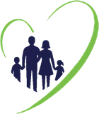
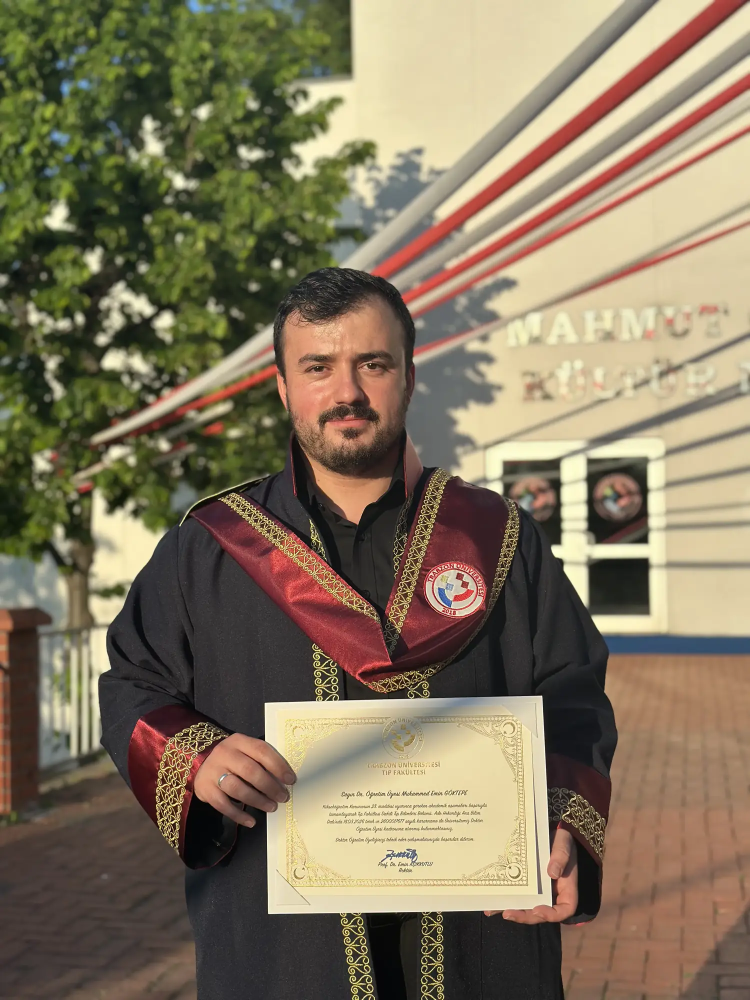
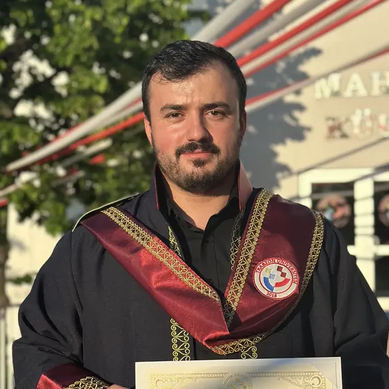

Birinci basamak
Birinci basamak ve kişi merkezli bakım

emindoktor
Aile hekimliği uzmanı bir tıp doktoruyum. Trabzon Üniversitesi Tıp Fakültesi'nde akademisyen olarak çalışıyor, Kanuni Eğitim ve Araştırma Hastanesi'nde görev yapıyorum; çok yakında Trabzon Şehir Hastanesi'nde görev yapmaya başlayacağım.
Birinci, ikinci ve üçüncü basamak sağlık hizmetlerinde, yani sağlık sisteminin her kademesinde çalıştım.
Sağlığa, geleneksel ve tamamlayıcı tıptan yapay zekâya uzanan geniş bir perspektiften bakmaya çalışıyorum.
Evliyim ve bir çocuk babasıyım.
Birinci basamak ve kişi merkezli bakım
Evde sağlık, palyatif bakım ve geriatri
Apiterapi, hirudoterapi, kupa, ozon
Eğitim videoları ve podcast YouTube'da
Tıpta yapay zekâ
Aile hekimliği uzmanlarının rapor çıkarabildiği ilaçlar ve tıbbi malzemeler
Çocukluk çağında döküntüyle seyreden hastalıklar için başvuru rehberi
Hafta hafta eğitim kayıtları
Arabada da dinlenebilir
